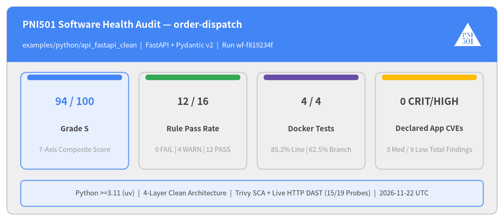
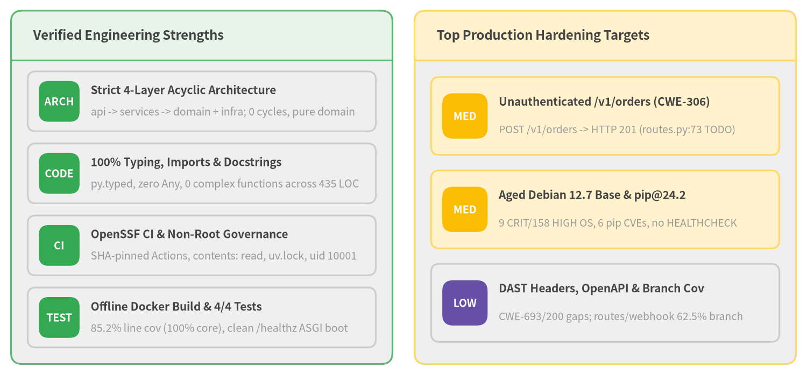
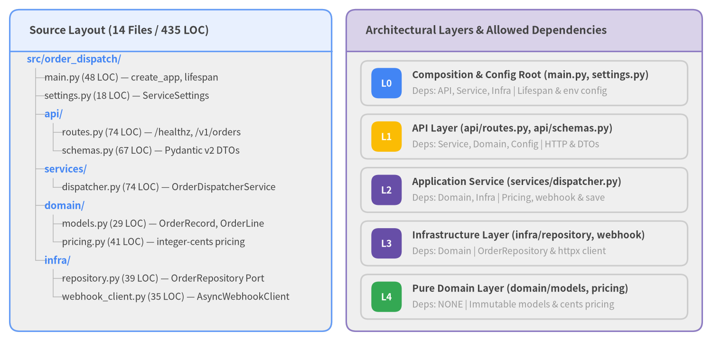
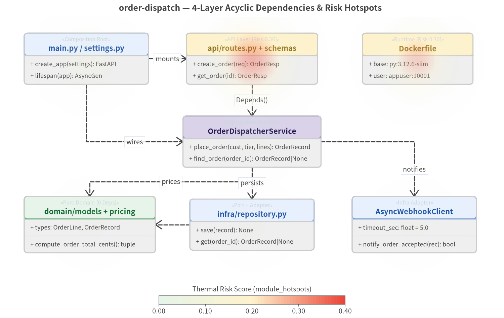
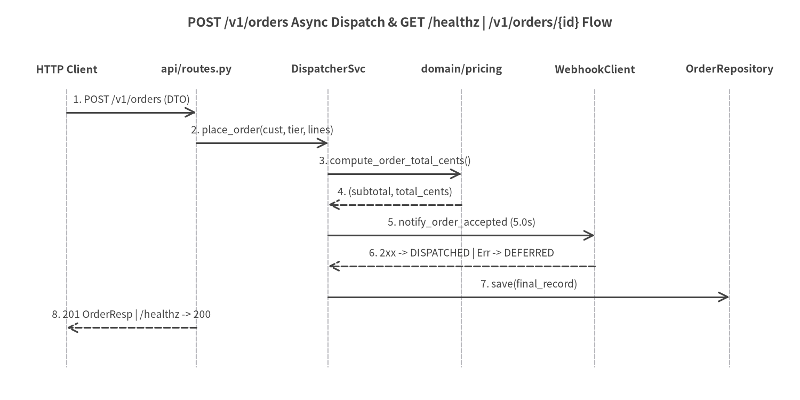
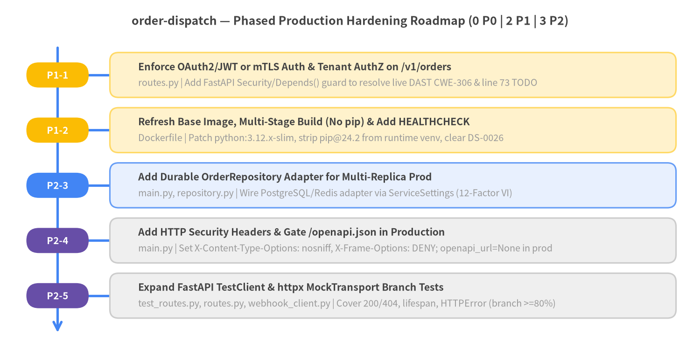
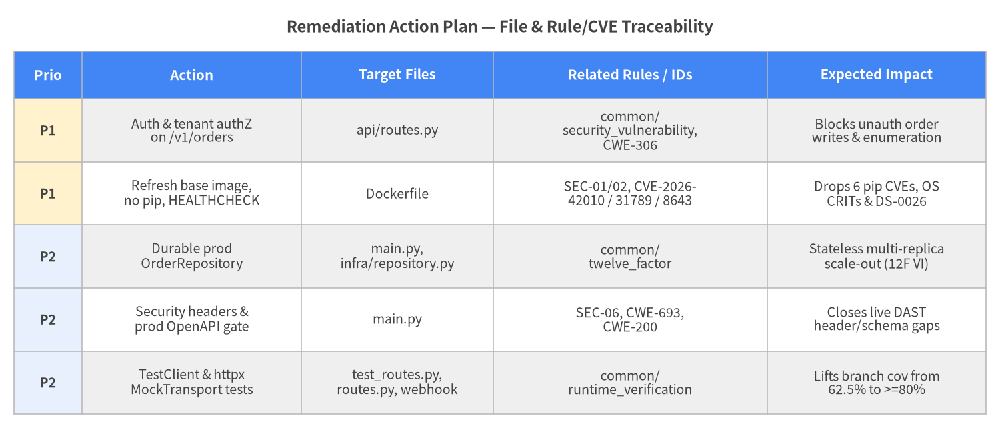
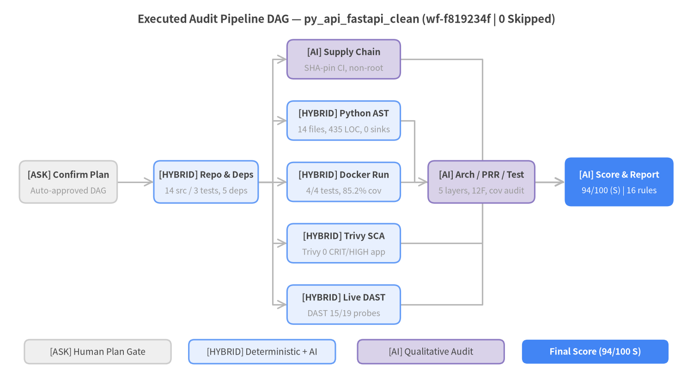
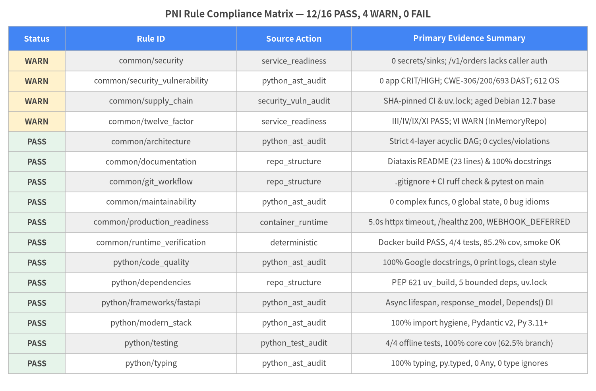

PNI ソフトウェア健全性診断レポート
対象リポジトリ: order-dispatch（examples/python/api_fastapi_clean）— Python 3.11+ 非同期 FastAPI + Pydantic v2 受注処理マイクロサービス

Source Code
from drawlib.canvas import save, setup
from drawlib.shapes import rectangle
from drawlib.smartarts import KpiCards, Panel
from drawlib.styles import Styles
from drawlib.text import text
from drawlib.utils import draw_pni_logo
setup(width=146, height=64, dpi=150)
panel = Panel(
"",
"",
style=Styles.Neutral.patch(shape_r=2.0),
header_style=Styles.PrimaryFlat.patch(shape_r=2.0),
text_style=Styles.WhiteBold.patch(text_size=13.5),
header_height=16.0,
header_align="left",
)
panel.draw((2.0, 2.0), width=142.0, height=60.0)
text(
(6.5, 56.8),
"PNI501 Software Health Audit — order-dispatch",
style=Styles.WhiteBold.patch(text_size=13.5, halign="left"),
)
text(
(6.5, 50.8),
"examples/python/api_fastapi_clean | FastAPI + Pydantic v2 | Run wf-f819234f",
style=Styles.White.patch(text_size=9.8, halign="left"),
)
# Official PNI501 emblem positioned on the right of the dark primary header
draw_pni_logo((135.5, 54.0), width=8.5, dark=True)
cards = KpiCards(
style=Styles.Neutral.patch(shape_r=1.8),
metric_style=Styles.DarkBold.patch(text_size=14.0),
text_style=Styles.DarkBold.patch(text_size=10.5),
description_style=Styles.Muted.patch(text_size=9.5),
accent_style=Styles.PrimaryFlat,
accent_position="top_bar",
metric_layout="top_stack",
spacing=3.0,
)
cards.add(
"94 / 100",
"Grade S",
"7-Axis Composite Score",
style=Styles.PrimaryNeutral.patch(shape_r=1.8),
metric_style=Styles.PrimaryBold.patch(text_size=15.0),
accent_style=Styles.PrimaryFlat,
)
cards.add(
"12 / 16",
"Rule Pass Rate",
"0 FAIL | 4 WARN | 12 PASS",
accent_style=Styles.SuccessFlat,
)
cards.add(
"4 / 4",
"Docker Tests",
"85.2% Line | 62.5% Branch",
accent_style=Styles.SecondaryFlat,
)
cards.add(
"0 CRIT/HIGH",
"Declared App CVEs",
"3 Med / 9 Low Total Findings",
accent_style=Styles.WarningFlat,
)
cards.draw((6.0, 15.0), width=134.0, height=28.0, columns=4)
rectangle(
(73.0, 8.0),
width=134.0,
height=7.5,
style=Styles.PrimaryNeutral.patch(shape_r=1.2),
)
text(
(73.0, 8.0),
"Python >=3.11 (uv) | 4-Layer Clean Architecture | Trivy SCA + Live HTTP DAST (15/19 Probes) | 2026-11-22 UTC",
style=Styles.Dark.patch(text_size=9.8),
)
save()
| 監査属性 | 実測・検証値 |
|---|---|
| プロジェクト / 対象パス | order-dispatch（examples/python/api_fastapi_clean） |
| 主要言語・技術スタック | python（>=3.11, uv_build + uv.lock, FastAPI >=0.115.0, Pydantic v2, httpx, Uvicorn） |
| ランタイム類型 | web_api, library（ソース 14 モジュール・435 LOC、テスト 3 ファイル） |
| ワークフロー ID / 実行 ID | py_api_fastapi_clean / wf-f819234f（PNI Workflow v2, scope=repo） |
| 評価日時（UTC） | 2026-11-22T11:29:00.803894+00:00（main@d1e02277, dirty） |
| 総合スコア・グレード | 94 / 100（グレード S） — ルール合格率 12/16（0 FAIL, 4 WARN, 12 PASS） |
| コンテナランタイム検証 | passed — Dockerfile・uv ハーネスともにビルド成功、オフラインテスト 4/4（--network=none）、行カバレッジ 85.2%、/healthz -> 200 |
| セキュリティ・動的診断 | Trivy passed（宣言依存の CRIT/HIGH 0 件、シークレット 0 件、AST 危険シンク 0 件）・ライブ DAST 15/19 プローブ合格（検出 3 件） |
1. エグゼクティブサマリー
order-dispatch は、Python 3.11+ と FastAPI / Pydantic v2 を用いたクリーンなマイクロサービスの基準実装として グレード S（94/100） を達成しました。型安全性・インポート衛生・Google スタイル docstring カバレッジのすべてで 100% を記録し、循環依存ゼロの厳格な 4 層クリーンアーキテクチャ、オフライン Docker テスト 4/4 全件合格（行カバレッジ 85.2%・/healthz ASGI 起動成功）、宣言済みアプリ依存の CVE ゼロ、および SHA 固定の OpenSSF CI ガバナンスを備えています。一方で、ライブ HTTP DAST と Trivy コンテナイメージ検査により、本番投入に向けた 4 つの具体的な強化項目が特定されました。すなわち、/v1/orders への OAuth2/JWT 認証追加（CWE-306）、python:3.12.6-slim-bookworm ベースイメージの更新および pip を除いたマルチステージビルド化と HEALTHCHECK 追加、本番環境での HTTP セキュリティヘッダー付与と /openapi.json 非公開化、そして TestClient / MockTransport による分岐カバレッジの 62.5% から 80% 以上への引き上げです。

Source Code
from drawlib.canvas import save, setup
from drawlib.charts.radar import RadarChart
from drawlib.smartarts import KpiCards
from drawlib.styles import Styles
from drawlib.text import text
setup(width=146, height=68, dpi=150)
radar = RadarChart(
categories=[
"Architecture",
"Code Quality",
"Typing",
"Testing",
"Dependencies",
"Security",
"Documentation",
],
axis_line_style=Styles.MutedThin,
radius=21.0,
min_value=0.0,
max_value=100.0,
levels=5,
grid_shape="polygon",
axis_text_style=Styles.DarkBold.patch(text_size=10.0),
grid_style=Styles.MutedDashedThin,
scale_text_style=Styles.Transparent,
value_text_style=Styles.PrimaryBold.patch(text_size=9.8),
value_format="{:.0f}",
)
radar.add_series(
"Final Score",
[96, 98, 100, 90, 95, 84, 98],
style=Styles.PrimaryFlat,
fill_alpha=0.26,
line_width=2.2,
point_size=0.9,
)
radar.add_series(
"Grade S Bar (90)",
[90, 90, 90, 90, 90, 90, 90],
style=Styles.SuccessDashed,
fill_alpha=0.0,
line_width=1.4,
point_size=0.0,
)
radar.draw((42.0, 37.5), align="center")
radar.draw_legend(
(11.0, 4.0),
text_style=Styles.Dark.patch(text_size=10.0),
orientation="horizontal",
item_gap=7.0,
)
text((113.0, 62.0), "Headline Diagnostic Telemetry", style=Styles.DarkBold.patch(text_size=11.5))
kpis = KpiCards(
style=Styles.Neutral.patch(shape_r=1.8),
metric_style=Styles.DarkBold.patch(text_size=13.5),
text_style=Styles.DarkBold.patch(text_size=10.2),
description_style=Styles.Muted.patch(text_size=9.5),
accent_style=Styles.PrimaryFlat,
accent_position="top_bar",
metric_layout="top_stack",
spacing=3.0,
)
kpis.add(
"94 / 100",
"Overall Grade S",
"12/16 Rules Passed",
style=Styles.PrimaryNeutral.patch(shape_r=1.8),
metric_style=Styles.PrimaryBold.patch(text_size=14.5),
accent_style=Styles.PrimaryFlat,
)
kpis.add(
"85.2%",
"Line Coverage",
"4/4 Tests | 62.5% Br",
accent_style=Styles.SuccessFlat,
)
kpis.add(
"0 CRIT/HIGH",
"Declared App CVEs",
"6 pip@24.2 + 612 OS",
accent_style=Styles.WarningFlat,
)
kpis.add(
"15 / 19",
"Live DAST Probes",
"3 Findings (0 Crit/Hi)",
accent_style=Styles.SecondaryFlat,
)
kpis.draw((84.0, 8.0), width=59.0, height=50.0, columns=2)
save()
主要な強みと本番運用に向けた優先リスク
本コードベースは、静的保守性・厳格な型付け・コンテナビルド再現性・CI サプライチェーン統制のいずれも極めて高い水準にあります。検出された MEDIUM 3 件および LOW 9 件（ビルド専用 pip@24.2 CVE 5 件の AI トリアージ再分類後）は、アーキテクチャの構造的欠陥ではなく、すべて配備境界のセキュリティ強化と HTTP 境界テスト拡充に集中しています。

Source Code
from drawlib.canvas import save, setup
from drawlib.smartarts import CardList, Panel
from drawlib.styles import Styles
setup(width=146, height=68, dpi=150)
left_panel = Panel(
"Verified Engineering Strengths",
style=Styles.Neutral.patch(shape_r=2.0),
header_style=Styles.SuccessNeutral.patch(shape_r=2.0),
text_style=Styles.DarkBold.patch(text_size=11.5),
header_height=9.0,
)
left_panel.draw((2.0, 2.0), width=69.0, height=64.0)
strengths = CardList(
style=Styles.Neutral.patch(shape_r=1.5),
text_style=Styles.DarkBold.patch(text_size=10.0),
description_style=Styles.Muted.patch(text_size=9.5),
badge_shape="rounded_rect",
badge_style=Styles.SuccessFlat,
badge_text_style=Styles.WhiteBold.patch(text_size=9.5),
spacing=2.2,
)
strengths.add(
"Strict 4-Layer Acyclic Architecture",
"api -> services -> domain + infra; 0 cycles, pure domain",
badge_text="ARCH",
)
strengths.add(
"100% Typing, Imports & Docstrings",
"py.typed, zero Any, 0 complex functions across 435 LOC",
badge_text="CODE",
)
strengths.add(
"OpenSSF CI & Non-Root Governance",
"SHA-pinned Actions, contents: read, uv.lock, uid 10001",
badge_text="CI",
)
strengths.add(
"Offline Docker Build & 4/4 Tests",
"85.2% line cov (100% core), clean /healthz ASGI boot",
badge_text="TEST",
)
strengths.draw((5.0, 5.0), width=63.0, height=50.0)
right_panel = Panel(
"Top Production Hardening Targets",
style=Styles.Neutral.patch(shape_r=2.0),
header_style=Styles.WarningNeutral.patch(shape_r=2.0),
text_style=Styles.DarkBold.patch(text_size=11.5),
header_height=9.0,
)
right_panel.draw((75.0, 2.0), width=69.0, height=64.0)
risks = CardList(
style=Styles.Neutral.patch(shape_r=1.5),
text_style=Styles.DarkBold.patch(text_size=10.0),
description_style=Styles.Muted.patch(text_size=9.2),
badge_shape="rounded_rect",
badge_style=Styles.WarningFlat,
badge_text_style=Styles.WhiteBold.patch(text_size=9.5),
spacing=2.8,
)
risks.add(
"Unauthenticated /v1/orders (CWE-306)",
"POST /v1/orders -> HTTP 201 (routes.py:73 TODO)",
badge_text="MED",
style=Styles.WarningNeutral.patch(shape_r=1.5),
)
risks.add(
"Aged Debian 12.7 Base & pip@24.2",
"9 CRIT/158 HIGH OS, 6 pip CVEs, no HEALTHCHECK",
badge_text="MED",
style=Styles.WarningNeutral.patch(shape_r=1.5),
)
risks.add(
"DAST Headers, OpenAPI & Branch Cov",
"CWE-693/200 gaps; routes/webhook 62.5% branch",
badge_text="LOW",
badge_style=Styles.SecondaryFlat,
)
risks.draw((78.0, 6.0), width=63.0, height=48.0)
save()
診断スコアカード概要
| 評価領域 | 測定結果 | 要約 |
|---|---|---|
| 総合スコア | 94 / 100（グレード S） | 16 ルール中 12 件 PASS、4 件 WARN、0 件 FAIL |
| 7 軸バランス | 設計 96・品質 98・型 100・テスト 90・依存 95・セキュリティ 84・文書 98 |
6 軸がグレード S（>=90）。セキュリティ（84）が最大の伸長余地 |
| 低スコア監査ステップ | security_vulnerability_audit（82, A）・web_penetration_audit（86, A）・python_test_audit（88, A） |
ベースイメージ CVE、/v1/orders 未認証、分岐カバレッジに集中 |
| 深刻度別検出数 | Critical 0 / High 0 / Medium 3 / Low 9 |
決定論ツール 6 件 + AI 定性評価 6 件（ビルド専用 pip@24.2 CVE 5 件を low に再分類） |
| コンテナランタイム検証 | passed（テスト 4/4、行 85.2% / 分岐 62.5%、/healthz -> 200） |
プロジェクト Dockerfile（31.33s）と uv ハーネス（0.48s）両方のビルド・オフライン実行に成功 |
| Trivy SCA & ライブ DAST | Trivy passed（宣言依存 CRIT/HIGH 0、IaC DS-0026 1 件、シークレット 0）・DAST 15/19 プローブ |
重大な悪用可能欠陥ゼロ。CWE-306・CWE-200・CWE-693 を実機検証で確認 |
| 承認済み監査計画 | 自動承認（plan_gate=false） |
src、tests、README.md、Dockerfile、およびライブ ASGI コンテナを対象としたリポジトリ全体監査 |
2. アーキテクチャとソースコード構造
order-dispatch は、薄いコンポジション＆設定ルート（main.py、settings.py）によって組み立てられる 厳格な 4 層非循環クリーン／ヘキサゴナル・マイクロサービス（api -> services -> domain + infra）として設計された非同期 FastAPI + Pydantic v2 アプリケーション（web_api + library）です。全 14 Python ソースファイル（435 LOC）の静的 AST 解析において、循環依存 0 件・レイヤー境界違反 0 件 が確認されており、domain パッケージは FastAPI・Pydantic・httpx から完全に独立しています。

Source Code
from drawlib.canvas import save, setup
from drawlib.smartarts import CardList, Panel, TreeNode
from drawlib.styles import Styles
setup(width=146, height=70, dpi=150)
left_panel = Panel(
"Source Layout (14 Files / 435 LOC)",
style=Styles.Neutral.patch(shape_r=2.0),
header_style=Styles.PrimaryNeutral.patch(shape_r=2.0),
text_style=Styles.DarkBold.patch(text_size=11.0),
header_height=8.5,
)
left_panel.draw((2.0, 2.0), width=66.0, height=66.0)
dir_style = Styles.PrimaryBold.patch(text_size=10.0)
file_style = Styles.Dark.patch(text_size=9.5)
line_style = Styles.MutedThin
root = TreeNode(
"src/order_dispatch/",
text_style=dir_style,
line_style=line_style,
line_horizontal_margin=1.8,
line_horizontal_length=3.5,
line_vertical_margin=3.75,
)
root.add("main.py (48 LOC) — create_app, lifespan", text_style=file_style)
root.add("settings.py (18 LOC) — ServiceSettings", text_style=file_style)
api_dir = TreeNode("api/", text_style=dir_style)
api_dir.add("routes.py (74 LOC) — /healthz, /v1/orders", text_style=file_style)
api_dir.add("schemas.py (67 LOC) — Pydantic v2 DTOs", text_style=file_style)
root.children.append(api_dir)
svc_dir = TreeNode("services/", text_style=dir_style)
svc_dir.add("dispatcher.py (74 LOC) — OrderDispatcherService", text_style=file_style)
root.children.append(svc_dir)
dom_dir = TreeNode("domain/", text_style=dir_style)
dom_dir.add("models.py (29 LOC) — OrderRecord, OrderLine", text_style=file_style)
dom_dir.add("pricing.py (41 LOC) — integer-cents pricing", text_style=file_style)
root.children.append(dom_dir)
inf_dir = TreeNode("infra/", text_style=dir_style)
inf_dir.add("repository.py (39 LOC) — OrderRepository Port", text_style=file_style)
inf_dir.add("webhook_client.py (35 LOC) — AsyncWebhookClient", text_style=file_style)
root.children.append(inf_dir)
root.draw((5.5, 57.8))
right_panel = Panel(
"Architectural Layers & Allowed Dependencies",
style=Styles.Neutral.patch(shape_r=2.0),
header_style=Styles.SecondaryNeutral.patch(shape_r=2.0),
text_style=Styles.DarkBold.patch(text_size=11.0),
header_height=8.5,
)
right_panel.draw((71.0, 2.0), width=73.0, height=66.0)
layers = CardList(
style=Styles.Neutral.patch(shape_r=1.5),
text_style=Styles.DarkBold.patch(text_size=9.8),
description_style=Styles.Muted.patch(text_size=9.2),
badge_shape="rounded_rect",
badge_style=Styles.PrimaryFlat,
badge_text_style=Styles.WhiteBold.patch(text_size=9.5),
spacing=1.8,
)
layers.add(
"Composition & Config Root (main.py, settings.py)",
"Deps: API, Service, Infra | Lifespan & env config",
badge_text="L0",
badge_style=Styles.PrimaryFlat,
)
layers.add(
"API Layer (api/routes.py, api/schemas.py)",
"Deps: Service, Domain, Config | HTTP & DTOs",
badge_text="L1",
badge_style=Styles.WarningFlat,
)
layers.add(
"Application Service (services/dispatcher.py)",
"Deps: Domain, Infra | Pricing, webhook & save",
badge_text="L2",
badge_style=Styles.SecondaryFlat,
)
layers.add(
"Infrastructure Layer (infra/repository, webhook)",
"Deps: Domain | OrderRepository & httpx client",
badge_text="L3",
badge_style=Styles.SecondaryFlat,
)
layers.add(
"Pure Domain Layer (domain/models, pricing)",
"Deps: NONE | Immutable models & cents pricing",
badge_text="L4",
badge_style=Styles.SuccessFlat,
)
layers.draw((74.0, 4.5), width=67.0, height=53.0)
save()
非循環依存グラフとリスクサーマルマップ
下図は、実コードから抽出したコンポーネント依存構造（ClassDiagram）に、module_hotspots.risk_score の実測値をサーマルオーバーレイ（HeatmapOverlay）として重ねたものです。リスクは明確に外周境界のみに局在しており、api/routes.py（0.36：/v1/orders 未認証と行カバレッジ 56.0%）、Dockerfile（0.30：旧 Debian 12.7 ベース、pip@24.2、HEALTHCHECK 欠如）、および main.py（0.12：既定のインメモリ永続化、セキュリティヘッダー・OpenAPI 制御未設定）に集中する一方、サービス層・ドメイン層・インフラアダプタの中核は一貫して低リスク（0.06）に保たれています。

Source Code
from drawlib.canvas import save, setup
from drawlib.charts.heatmap import HeatmapOverlay
from drawlib.diagrams.class_diagram import ClassDiagram, ClassNode
from drawlib.styles import Styles
setup(width=146, height=92, dpi=150)
diag = ClassDiagram(
node_style=Styles.Neutral,
header_style=Styles.PrimaryNeutral,
edge_style=Styles.Dark,
edge_text_style=Styles.Dark.patch(text_size=9.5),
title="order-dispatch — 4-Layer Acyclic Dependencies & Risk Hotspots",
title_style=Styles.DarkBold.patch(text_size=12.0),
width=140.0,
height=74.0,
margin=4.0,
)
n_main = ClassNode(
"main.py / settings.py",
stereotype="Composition Root",
width=36.0,
row_height=3.4,
style=Styles.Neutral,
header_style=Styles.PrimaryNeutral,
)
n_main.add_method("create_app", "settings", "FastAPI")
n_main.add_method("lifespan", "app", "AsyncGen")
n_routes = ClassNode(
"api/routes.py + schemas",
stereotype="API Layer [Risk 0.36]",
width=38.0,
row_height=3.4,
style=Styles.Neutral,
header_style=Styles.WarningNeutral,
)
n_routes.add_method("create_order", "req", "OrderResp")
n_routes.add_method("get_order", "id", "OrderResp")
n_docker = ClassNode(
"Dockerfile",
stereotype="Runtime [Risk 0.30]",
width=32.0,
row_height=3.4,
style=Styles.Neutral,
header_style=Styles.WarningNeutral,
)
n_docker.add_attribute("base", "py:3.12.6-slim")
n_docker.add_attribute("user", "appuser:10001")
n_svc = ClassNode(
"OrderDispatcherService",
stereotype="Application Service",
width=40.0,
row_height=3.4,
style=Styles.Neutral,
header_style=Styles.SecondaryNeutral,
)
n_svc.add_method("place_order", "cust, tier, lines", "OrderRecord")
n_svc.add_method("find_order", "order_id", "OrderRecord|None")
n_dom = ClassNode(
"domain/models + pricing",
stereotype="Pure Domain (0 Deps)",
width=38.0,
row_height=3.4,
style=Styles.Neutral,
header_style=Styles.SuccessNeutral,
)
n_dom.add_attribute("types", "OrderLine, OrderRecord")
n_dom.add_method("compute_order_total_cents", "", "tuple")
n_repo = ClassNode(
"infra/repository.py",
stereotype="Port + Adapter",
width=36.0,
row_height=3.4,
style=Styles.Neutral,
header_style=Styles.PrimaryNeutral,
)
n_repo.add_method("save", "record", "None")
n_repo.add_method("get", "order_id", "OrderRecord|None")
n_hook = ClassNode(
"AsyncWebhookClient",
stereotype="Infra Adapter",
width=36.0,
row_height=3.4,
style=Styles.Neutral,
header_style=Styles.PrimaryNeutral,
)
n_hook.add_attribute("timeout_sec", "float = 5.0")
n_hook.add_method("notify_order_accepted", "rec", "bool")
diag.add(n_main, xy=(22.0, 62.0))
diag.add(n_routes, xy=(70.0, 62.0))
diag.add(n_docker, xy=(118.0, 62.0))
diag.add(n_svc, xy=(70.0, 38.0))
diag.add(n_dom, xy=(23.0, 14.0))
diag.add(n_repo, xy=(70.0, 14.0))
diag.add(n_hook, xy=(117.0, 14.0))
diag.connect(n_main, n_routes, relationship_type="dependency", start_side="right", end_side="left", label="mounts")
diag.connect(n_main, n_svc, relationship_type="dependency", start_side="bottom", end_side="left", label="wires")
diag.connect(n_routes, n_svc, relationship_type="dependency", start_side="bottom", end_side="top", label="Depends()")
diag.connect(n_svc, n_dom, relationship_type="dependency", start_side="bottom", end_side="top", label="prices")
diag.connect(n_svc, n_repo, relationship_type="dependency", start_side="bottom", end_side="top", label="persists")
diag.connect(n_svc, n_hook, relationship_type="dependency", start_side="right", end_side="top", label="notifies")
diag.connect(n_repo, n_dom, relationship_type="dependency", start_side="left", end_side="right")
overlay = HeatmapOverlay(
styles=[Styles.SuccessNeutral, Styles.WarningNeutral, Styles.DangerFlat],
width=140.0,
height=74.0,
min_value=0.0,
max_value=0.40,
default_radius=17.0,
max_alpha=0.46,
show_contour_lines=False,
)
overlay.add_spot(n_routes, value=0.36, radius=19.0)
overlay.add_spot(n_docker, value=0.30, radius=17.0)
overlay.add_spot(n_main, value=0.12, radius=15.0)
overlay.add_spot(n_svc, value=0.06, radius=13.0)
overlay.add_spot(n_dom, value=0.06, radius=13.0)
overlay.add_spot(n_repo, value=0.06, radius=13.0)
overlay.add_spot(n_hook, value=0.06, radius=13.0)
diag.draw((3.0, 13.0))
overlay.draw((3.0, 13.0))
overlay.draw_colorbar(
(46.0, 4.0),
text_style=Styles.Dark.patch(text_size=9.5),
length=54.0,
thickness=2.4,
orientation="horizontal",
num_ticks=5,
value_format="{:.2f}",
label="Thermal Risk Score (module_hotspots)",
)
save()
実行フローと並行・エラー処理モデル
order-dispatch は Uvicorn の asyncio イベントループ上で動作し、httpx.AsyncClient によるノンブロッキング外部 Webhook 送信を行います。アプリケーション単位の依存（ServiceSettings、InMemoryOrderRepository、AsyncWebhookClient、OrderDispatcherService）は FastAPI の asynccontextmanager ライフスパン起動時に app.state へ登録されます。ドメイン不変条件違反は PricingError、存在しない注文参照は HTTP 404 を返し、外部 Webhook の httpx.HTTPError 発生時は警告ログを記録したうえで OrderStatus.WEBHOOK_DEFERRED へ安全にフォールバックします。

Source Code
from drawlib.canvas import save, setup
from drawlib.diagrams.sequence import Participant, SequenceDiagram
from drawlib.styles import Styles
from drawlib.text import text
setup(width=156, height=78, dpi=150)
text(
(78.0, 73.5),
"POST /v1/orders Async Dispatch & GET /healthz | /v1/orders/{id} Flow",
style=Styles.DarkBold.patch(text_size=11.5),
)
seq = SequenceDiagram(
node_style=Styles.PrimaryNeutral.patch(shape_r=1.5),
node_text_style=Styles.DarkBold.patch(text_size=9.5),
edge_style=Styles.Dark,
edge_text_style=Styles.Dark.patch(text_size=9.2),
autonumber=True,
col_width=23.5,
step_y=6.0,
margin=4.0,
)
p_client = seq.add(Participant("HTTP Client", width=21.0, height=8.0, style=Styles.Neutral))
p_api = seq.add(Participant("api/routes.py", width=21.5, height=8.0, style=Styles.WarningNeutral))
p_svc = seq.add(Participant("DispatcherSvc", width=22.0, height=8.0, style=Styles.PrimaryNeutral))
p_dom = seq.add(Participant("domain/pricing", width=22.0, height=8.0, style=Styles.SuccessNeutral))
p_hook = seq.add(Participant("WebhookClient", width=22.0, height=8.0, style=Styles.SecondaryNeutral))
p_repo = seq.add(Participant("OrderRepository", width=22.5, height=8.0, style=Styles.Neutral))
seq.request(p_client, p_api, "POST /v1/orders (DTO)")
seq.request(p_api, p_svc, "place_order(cust, tier, lines)")
seq.request(p_svc, p_dom, "compute_order_total_cents()")
seq.reply(p_dom, p_svc, "(subtotal, total_cents)")
seq.request(p_svc, p_hook, "notify_order_accepted (5.0s)", is_async=True)
seq.reply(p_hook, p_svc, "2xx -> DISPATCHED | Err -> DEFERRED")
seq.request(p_svc, p_repo, "save(final_record)")
seq.reply(p_api, p_client, "201 OrderResp | /healthz -> 200")
seq.draw((78.0, 36.5), align="center")
save()
ソースモジュール一覧（全 14 ファイル・435 LOC）
モジュールパス（examples/python/api_fastapi_clean/...） |
レイヤー | LOC | 公開型 | 公開関数・エンドポイント | ホットスポットリスク |
|---|---|---|---|---|---|
src/order_dispatch/main.py |
コンポジションルート | 48 | — | lifespan, create_app |
0.12 |
src/order_dispatch/settings.py |
コンポジションルート | 18 | ServiceSettings |
load_settings |
0.06 |
src/order_dispatch/api/routes.py |
API レイヤー | 74 | — | get_dispatcher, get_settings, health_check, create_order, get_order |
0.36 |
src/order_dispatch/api/schemas.py |
API レイヤー | 67 | CreateOrderRequest, HealthResponse, OrderLineInput, OrderResponse |
to_domain_lines, to_order_response |
0.06 |
src/order_dispatch/services/dispatcher.py |
アプリケーションサービス | 74 | OrderDispatcherService |
— | 0.06 |
src/order_dispatch/domain/models.py |
ドメインレイヤー | 29 | CustomerTier, OrderLine, OrderRecord, OrderStatus |
— | 0.06 |
src/order_dispatch/domain/pricing.py |
ドメインレイヤー | 41 | PricingError |
calculate_subtotal_cents, compute_order_total_cents |
0.06 |
src/order_dispatch/infra/repository.py |
インフラストラクチャ | 39 | InMemoryOrderRepository, OrderRepository |
— | 0.06 |
src/order_dispatch/infra/webhook_client.py |
インフラストラクチャ | 35 | AsyncWebhookClient |
— | 0.06 |
src/order_dispatch/__init__.py（他 4 パッケージ __init__.py） |
パッケージ定義 | 10（2 × 5） | — | — | 0.06 |
Dockerfile |
コンテナビルド | — | — | 非 root appuser（uid 10001）、python:3.12.6-slim-bookworm |
0.30 |
3. 推奨改善ロードマップ
order-dispatch はすでに グレード S（94/100） に達しており、緊急対応を要する重大・高リスクのアプリ脆弱性（P0 ブロッカー）は 0 件です。したがって改善計画は、ライブ DAST で確認された CWE-306 認証欠如およびベースイメージ OS/pip CVE を解消する 2 件の P1 セキュリティ強化施策と、マルチレプリカ水平スケールおよび分岐カバレッジ 80% 超を実現する 3 件の P2 本番仕上げ施策の 2 段階で構成されます。

Source Code
from drawlib.canvas import save, setup
from drawlib.smartarts import Roadmap
from drawlib.styles import Styles
from drawlib.text import text
setup(width=146, height=74, dpi=150)
text(
(73.0, 69.5),
"order-dispatch — Phased Production Hardening Roadmap (0 P0 | 2 P1 | 3 P2)",
style=Styles.DarkBold.patch(text_size=12.0),
)
rm = Roadmap(
style=Styles.Neutral.patch(shape_r=1.8),
text_style=Styles.DarkBold.patch(text_size=10.2),
description_style=Styles.Muted.patch(text_size=9.5),
spine_style=Styles.PrimaryBold,
badge_style=Styles.PrimaryFlat,
badge_text_style=Styles.WhiteBold.patch(text_size=9.8),
direction="vertical",
card_shape="rounded_rect",
spacing=2.4,
)
rm.add(
"Enforce OAuth2/JWT or mTLS Auth & Tenant AuthZ on /v1/orders",
"routes.py | Add FastAPI Security/Depends() guard to resolve live DAST CWE-306 & line 73 TODO",
badge_text="P1-1",
style=Styles.WarningNeutral.patch(shape_r=1.8),
badge_style=Styles.WarningFlat,
)
rm.add(
"Refresh Base Image, Multi-Stage Build (No pip) & Add HEALTHCHECK",
"Dockerfile | Patch python:3.12.x-slim, strip pip@24.2 from runtime venv, clear DS-0026",
badge_text="P1-2",
style=Styles.WarningNeutral.patch(shape_r=1.8),
badge_style=Styles.WarningFlat,
)
rm.add(
"Add Durable OrderRepository Adapter for Multi-Replica Prod",
"main.py, repository.py | Wire PostgreSQL/Redis adapter via ServiceSettings (12-Factor VI)",
badge_text="P2-3",
style=Styles.PrimaryNeutral.patch(shape_r=1.8),
badge_style=Styles.PrimaryFlat,
)
rm.add(
"Add HTTP Security Headers & Gate /openapi.json in Production",
"main.py | Set X-Content-Type-Options: nosniff, X-Frame-Options: DENY; openapi_url=None in prod",
badge_text="P2-4",
style=Styles.Neutral.patch(shape_r=1.8),
badge_style=Styles.SecondaryFlat,
)
rm.add(
"Expand FastAPI TestClient & httpx MockTransport Branch Tests",
"test_routes.py, routes.py, webhook_client.py | Cover 200/404, lifespan, HTTPError (branch >=80%)",
badge_text="P2-5",
style=Styles.Neutral.patch(shape_r=1.8),
badge_style=Styles.SecondaryFlat,
)
rm.draw((4.0, 3.0), width=138.0, height=62.5)
save()
アクションプラン・トレーサビリティマトリクス
各改善アクションは、対象ファイル、関連 PNI ルール・CWE/CVE ID、および期待される改善効果と 1 対 1 で紐づけられています。

Source Code
from drawlib.canvas import save, setup
from drawlib.smartarts import Table
from drawlib.styles import Colors, Styles
from drawlib.text import text
setup(width=146, height=64, dpi=150)
text(
(73.0, 60.0),
"Remediation Action Plan — File & Rule/CVE Traceability",
style=Styles.DarkBold.patch(text_size=11.5),
)
tbl = Table(
cell_style=Styles.Neutral,
text_style=Styles.Dark.patch(text_size=9.5),
header_cell_style=Styles.PrimaryFlat,
header_text_style=Styles.WhiteBold.patch(text_size=9.8),
border_style=Styles.MutedThin,
has_header=True,
)
tbl.set_style_cell_evenodd(
Colors.White,
Styles.Dark.patch(text_size=9.5),
Colors.Neutral,
Styles.Dark.patch(text_size=9.5),
)
tbl.set_style_cell_header(Colors.Primary, Styles.WhiteBold.patch(text_size=9.8))
tbl.set_style_cell(
Styles.WarningNeutral.shape_fill_color,
Styles.DarkBold.patch(text_size=9.5),
rows=[1, 2],
columns=[0],
)
tbl.set_style_cell(
Styles.PrimaryNeutral.shape_fill_color,
Styles.DarkBold.patch(text_size=9.5),
rows=[3, 4, 5],
columns=[0],
)
data = [
["Prio", "Action", "Target Files", "Related Rules / IDs", "Expected Impact"],
[
"P1",
"Auth & tenant authZ\non /v1/orders",
"api/routes.py",
"common/\nsecurity_vulnerability,\nCWE-306",
"Blocks unauth order\nwrites & enumeration",
],
[
"P1",
"Refresh base image,\nno pip, HEALTHCHECK",
"Dockerfile",
"SEC-01/02, CVE-2026-\n42010 / 31789 / 8643",
"Drops 6 pip CVEs, OS\nCRITs & DS-0026",
],
[
"P2",
"Durable prod\nOrderRepository",
"main.py,\ninfra/repository.py",
"common/\ntwelve_factor",
"Stateless multi-replica\nscale-out (12F VI)",
],
[
"P2",
"Security headers &\nprod OpenAPI gate",
"main.py",
"SEC-06, CWE-693,\nCWE-200",
"Closes live DAST\nheader/schema gaps",
],
[
"P2",
"TestClient & httpx\nMockTransport tests",
"test_routes.py,\nroutes.py, webhook",
"common/\nruntime_verification",
"Lifts branch cov from\n62.5% to >=80%",
],
]
tbl.draw_flexible(
(2.0, 56.5),
column_widths=[10.0, 32.0, 28.0, 40.0, 32.0],
row_heights=[7.0, 9.2, 9.2, 9.2, 9.2, 9.2],
data=data,
align="top_left",
)
save()
エンジニアリング詳細仕様（P1 -> P2）
| 優先度 | カテゴリ | 改善施策および実装仕様 | 対象ファイル | 関連ルール・ID | 期待される効果 |
|---|---|---|---|---|---|
| P1 | security |
/v1/orders エンドポイントへの認証・テナント認可の強制: POST /v1/orders および GET /v1/orders/{order_id} に OAuth2/JWT または mTLS の呼び出し元プリンシパル Depends() 依存を導入し、CWE-306 と 73 行目の TODO(security) を解消する。 |
src/order_dispatch/api/routes.py |
common/security_vulnerability, CWE-306 |
未認証による不正注文作成および他テナント注文 ID 列挙を防止。 |
| P1 | security |
Dockerfile ベースイメージ更新・pip 除外マルチステージ化・HEALTHCHECK 追加: python:3.12.6-slim-bookworm を最新のパッチ適用済み 3.12 slim ダイジェストへ更新し、ビルド済み仮想環境のみを実行ステージへコピー（pip@24.2 を除去）したうえで /healthz 向け HEALTHCHECK を追加する。 |
Dockerfile |
common/security_vulnerability, SEC-01, SEC-02, CVE-2026-42010, CVE-2026-31789, CVE-2026-8643 |
全 6 件の pip CVE を根絶し、パッチ可能な Debian OS CRITICAL CVE と Trivy DS-0026 を解消。 |
| P2 | architecture |
マルチレプリカ本番配備向けの永続 OrderRepository アダプタ追加: env == "prod" 時に ServiceSettings 経由で PostgreSQL/Redis 永続アダプタを注入できるようにし、プロセスを完全にステートレス化する。 |
src/order_dispatch/main.py, src/order_dispatch/infra/repository.py |
common/twelve_factor |
再起動時のデータ欠損ゼロと 12-Factor VI に準拠した水平レプリカ拡張を実現。 |
| P2 | security |
HTTP セキュリティヘッダーミドルウェア追加と本番 /openapi.json 非公開化: X-Content-Type-Options: nosniff および X-Frame-Options: DENY を付与する軽量 Starlette ミドルウェアを登録し、settings.env == "prod" では openapi_url=None とする。 |
src/order_dispatch/main.py |
common/security_vulnerability, SEC-06, CWE-693, CWE-200 |
ライブ DAST で検出された CWE-693・CWE-200 のベースライン強化項目を解消。 |
| P2 | testing |
FastAPI TestClient と httpx MockTransport による HTTP／ライフスパン分岐テスト追加: /healthz、POST /v1/orders、GET /v1/orders/{id}（200・404）、ライフスパン起動／終了、および MockTransport による httpx.HTTPError フォールバック経路を網羅する。 |
tests/test_routes.py, src/order_dispatch/api/routes.py, src/order_dispatch/infra/webhook_client.py |
common/runtime_verification |
実測分岐カバレッジを 62.5% から >=80% へ引き上げ、HTTP 境界テストの空白を解消。 |
4. 監査パイプライン（DAG）・評価基準・検出事項
本章では、ワークフロー実行 wf-f819234f（py_api_fastapi_clean）の完全な再現性と証跡の透明性を提示します。実行されたアクションレベルの監査パイプライン DAG、検査対象範囲と決定論アナライザ群、7 軸の決定論ベースライン対 AI 調整（±10pt 上限）、監査ステップ別スコア、WARN -> PASS ルール準拠マトリクス、集約済み検出事項、AI 誤検知トリアージ記録、および機械可読アーティファクト一覧を網羅します。

Source Code
from drawlib.canvas import save, setup
from drawlib.graph import LayerGraph
from drawlib.lines import lines
from drawlib.shapes import rectangle
from drawlib.styles import Styles
from drawlib.text import text
setup(width=156, height=84, dpi=150)
text(
(78.0, 79.5),
"Executed Audit Pipeline DAG — py_api_fastapi_clean (wf-f819234f | 0 Skipped)",
style=Styles.DarkBold.patch(text_size=11.5),
)
g = LayerGraph(
direction="LR",
rank_sep=5.5,
node_sep=2.8,
default_node_width=23.0,
default_node_height=9.2,
edge_routing="orthogonal",
)
g.node("plan", width=22.0, height=9.5, layer=0)
g.node("repo", width=23.5, height=9.5, layer=1)
g.node("supply", width=25.5, height=8.8, layer=2)
g.node("ast", width=25.5, height=8.8, layer=2)
g.node("runtime", width=25.5, height=8.8, layer=2)
g.node("trivy", width=25.5, height=8.8, layer=2)
g.node("dast", width=25.5, height=8.8, layer=2)
g.node("synth", width=24.0, height=9.5, layer=3)
g.node("score", width=24.5, height=11.0, layer=4)
g.edge("plan", "repo")
g.edge("repo", "supply")
g.edge("repo", "ast")
g.edge("repo", "runtime")
g.edge("repo", "trivy")
g.edge("repo", "dast")
g.edge("ast", "synth")
g.edge("supply", "score")
g.edge("synth", "score")
g.edge("runtime", "score")
g.edge("trivy", "score")
g.edge("dast", "score")
layout = g.get_layout(width=156.0, height=84.0, margin=4.0)
# Compute exact bounding box of solved nodes and center cleanly inside x=[4, 152], y=[13, 73]
min_x = min(n.x - n.width / 2.0 for n in layout.nodes.values())
max_x = max(n.x + n.width / 2.0 for n in layout.nodes.values())
min_y = min(n.y - n.height / 2.0 for n in layout.nodes.values())
max_y = max(n.y + n.height / 2.0 for n in layout.nodes.values())
dx = 78.0 - (min_x + max_x) / 2.0
dy = 43.0 - (min_y + max_y) / 2.0
for edge in layout.edges:
pts = [(px + dx, py + dy) for px, py in edge.points]
lines(pts, arrow_head="->", style=Styles.Muted)
specs = [
("plan", "[ASK] Confirm Plan", "Auto-approved DAG", Styles.Neutral, Styles.DarkBold, Styles.Muted),
("repo", "[HYBRID] Repo & Deps", "14 src / 3 tests, 5 deps", Styles.PrimaryNeutral, Styles.DarkBold, Styles.Muted),
("supply", "[AI] Supply Chain", "SHA-pin CI, non-root", Styles.SecondaryNeutral, Styles.DarkBold, Styles.Muted),
("ast", "[HYBRID] Python AST", "14 files, 435 LOC, 0 sinks", Styles.PrimaryNeutral, Styles.DarkBold, Styles.Muted),
("runtime", "[HYBRID] Docker Run", "4/4 tests, 85.2% cov", Styles.PrimaryNeutral, Styles.DarkBold, Styles.Muted),
("trivy", "[HYBRID] Trivy SCA", "Trivy 0 CRIT/HIGH app", Styles.PrimaryNeutral, Styles.DarkBold, Styles.Muted),
("dast", "[HYBRID] Live DAST", "DAST 15/19 probes", Styles.PrimaryNeutral, Styles.DarkBold, Styles.Muted),
("synth", "[AI] Arch / PRR / Test", "5 layers, 12F, cov audit", Styles.SecondaryNeutral, Styles.DarkBold, Styles.Muted),
("score", "[AI] Score & Report", "94/100 (S) | 16 rules", Styles.PrimaryFlat, Styles.WhiteBold, Styles.White),
]
for nid, title_lbl, sub_lbl, box_style, t_style, s_style in specs:
n = layout[nid]
cx, cy = n.x + dx, n.y + dy
rectangle((cx, cy), width=n.width, height=n.height, style=box_style.patch(shape_r=1.5))
text((cx, cy + 1.6), title_lbl, style=t_style.patch(text_size=9.2))
text((cx, cy - 2.0), sub_lbl, style=s_style.patch(text_size=8.6))
# Legend bar cleanly separated below DAG
legend_items = [
(22.0, "[ASK] Human Plan Gate", Styles.Neutral, Styles.Dark),
(59.0, "[HYBRID] Deterministic + AI", Styles.PrimaryNeutral, Styles.Dark),
(97.0, "[AI] Qualitative Audit", Styles.SecondaryNeutral, Styles.Dark),
(134.0, "Final Score (94/100 S)", Styles.PrimaryFlat, Styles.WhiteBold),
]
for lx, ltxt, lbox, lts in legend_items:
rectangle((lx, 4.8), width=33.0, height=5.4, style=lbox.patch(shape_r=1.2))
text((lx, 4.8), ltxt, style=lts.patch(text_size=9.2))
save()
検査対象範囲と実行済み決定論ツール
| スコープ項目 | 記録された事実データ（audit_scope） |
|---|---|
| 対象ルート・パス | examples/python/api_fastapi_clean ・ source=['src'], tests=['tests'], docs=['README.md'], exclude=['none'] |
| 言語・フレームワーク | 主要言語=python、副次言語=['none']、検出フレームワーク=fastapi, pydantic, pytest, httpx |
| Git 来歴 | main@d1e02277 (dirty) |
| 実行済み決定論ツール | project_inspect (python)、tree-sitter AST (python)、container runtime harness (docker: python/uv.dockerfile)、Trivy (docker: fs+image)、web_pentest (httpx, 19 probes) |
| ステージ実行実績 | 全 12 ワークフローステージ（ASK 1・HYBRID 5・AI 6 — 11 完了 + create_report 実行中、スキップ 0 件） |
7 軸の決定論ベースライン対 AI 調整（±10pt アンカリング）
各評価軸のスコアは決定論アナライザのベースラインを基準とし、明確な根拠に基づく AI 定性調整を最大 ±10pt に制限して算出しています。
| 健全性評価軸 | 決定論ベースライン | AI 調整（Δ） |
最終スコア | 根拠・評価理由 |
|---|---|---|---|---|
| Architecture（設計） | 100 |
-4 |
96 | 循環依存ゼロ・純粋ドメイン中核の厳格な 4 層クリーン構成（api -> services -> domain + infra）。-4pt は 12-Factor VI における既定 InMemoryOrderRepository のプロセス内状態保持を反映。 |
| Code Quality（品質） | 100 |
-2 |
98 | インポート衛生 100%、複雑度ホットスポット・バグ懸念イディオムともに 0 件、構造化ログと最新 FastAPI ライフスパン／Pydantic v2 準拠。-2pt は軽微な StarletteDeprecationWarning を反映。 |
| Typing（型安全性） | 100 |
0 |
100 | 型カバレッジ 100%、py.typed マーカー完備、from __future__ import annotations 徹底、Any 使用・無条件 type ignore ともに 0 件。 |
| Testing（テスト） | 100 |
-10 |
90 | オフライン Docker pytest 4/4 合格、行カバレッジ 85.2%（コア領域 100%）。-10pt は routes.py（56.0%）・webhook_client.py（55.6%）の未カバー分岐に伴う分岐カバレッジ 62.5% を反映。 |
| Dependencies（依存） | 100 |
-5 |
95 | PEP 621 pyproject.toml + uv.lock、未固定依存 0 件、宣言アプリ CVE 0 件、Dependabot・SHA 固定 CI 完備。-5pt は pip@24.2 を内包する旧 python:3.12.6-slim-bookworm ベースイメージを反映。 |
| Security（セキュリティ） | 85 |
-1 |
84 | 宣言アプリ CVE・シークレット・危険シンクすべて 0 件、非 root Dockerfile、DAST 15/19 合格。ライブ DAST の CWE-306（未認証 POST /v1/orders）、CWE-200（/openapi.json）、CWE-693 ヘッダー欠如、および Debian 12.7 OS CVE を減点（ビルド専用 pip CVE 5 件は low へ再分類）。 |
| Documentation（文書） | 100 |
-2 |
98 | Diataxis 構成の README.md（Quickstart・How-To・API リファレンス・アーキテクチャ解説）と全公開シンボル 100% の Google スタイル docstring。 |
監査ステップ別スコア（低い順）

Source Code
from drawlib.canvas import save, setup
from drawlib.charts.bar import BarChart
from drawlib.styles import Styles
setup(width=146, height=62, dpi=150)
chart = BarChart(
axis_line_style=Styles.DarkThin,
width=96.0,
height=44.0,
categories=[
"security_vulnerability_audit (A)",
"web_penetration_audit (A)",
"python_test_audit (A)",
"container_runtime_audit (S)",
"service_readiness_audit (S)",
"supply_chain_audit (S)",
"python_ast_audit (S)",
"repo_structure_audit (S)",
],
orientation="horizontal",
bar_width_ratio=0.62,
bar_r=0.8,
axis_text_style=Styles.Dark.patch(text_size=9.6),
grid_style=Styles.MutedDashedThin,
value_text_style=Styles.DarkBold.patch(text_size=9.8),
value_format="{:.0f}",
title="Audit Step Scores (Weakest -> Strongest | Grade S >= 90)",
title_style=Styles.DarkBold.patch(text_size=11.5),
)
chart.configure_x_axis(
min_value=0.0,
max_value=105.0,
ticks=[0, 20, 40, 60, 80, 90, 100],
show_grid=True,
label="Audit Score (0-100)",
)
chart.add_series(
"Step Score",
[82, 86, 88, 90, 91, 92, 95, 96],
style=Styles.PrimaryNeutral,
)
chart.draw((40.0, 9.0))
save()
ルール準拠マトリクス（WARN -> PASS・全 16 ルール）

Source Code
from drawlib.canvas import save, setup
from drawlib.smartarts import Table
from drawlib.styles import Colors, Styles
from drawlib.text import text
setup(width=146, height=96, dpi=150)
text(
(73.0, 92.5),
"PNI Rule Compliance Matrix — 12/16 PASS, 4 WARN, 0 FAIL",
style=Styles.DarkBold.patch(text_size=11.5),
)
tbl = Table(
cell_style=Styles.Neutral,
text_style=Styles.Dark.patch(text_size=9.5),
header_cell_style=Styles.PrimaryFlat,
header_text_style=Styles.WhiteBold.patch(text_size=9.8),
border_style=Styles.MutedThin,
has_header=True,
)
tbl.set_style_cell_evenodd(
Colors.White,
Styles.Dark.patch(text_size=9.5),
Colors.Neutral,
Styles.Dark.patch(text_size=9.5),
)
tbl.set_style_cell_header(Colors.Primary, Styles.WhiteBold.patch(text_size=9.8))
tbl.set_style_cell(
Styles.WarningNeutral.shape_fill_color,
Styles.DarkBold.patch(text_size=9.5),
rows=[1, 2, 3, 4],
columns=[0],
)
tbl.set_style_cell(
Styles.SuccessNeutral.shape_fill_color,
Styles.DarkBold.patch(text_size=9.5),
rows=list(range(5, 17)),
columns=[0],
)
rows = [
["Status", "Rule ID", "Source Action", "Primary Evidence Summary"],
["WARN", "common/security", "service_readiness", "0 secrets/sinks; /v1/orders lacks caller auth"],
["WARN", "common/security_vulnerability", "python_ast_audit", "0 app CRIT/HIGH; CWE-306/200/693 DAST; 612 OS"],
["WARN", "common/supply_chain", "security_vuln_audit", "SHA-pinned CI & uv.lock; aged Debian 12.7 base"],
["WARN", "common/twelve_factor", "service_readiness", "III/IV/IX/XI PASS; VI WARN (InMemoryRepo)"],
["PASS", "common/architecture", "python_ast_audit", "Strict 4-layer acyclic DAG; 0 cycles/violations"],
["PASS", "common/documentation", "repo_structure", "Diataxis README (23 lines) & 100% docstrings"],
["PASS", "common/git_workflow", "repo_structure", ".gitignore + CI ruff check & pytest on main"],
["PASS", "common/maintainability", "python_ast_audit", "0 complex funcs, 0 global state, 0 bug idioms"],
["PASS", "common/production_readiness", "container_runtime", "5.0s httpx timeout, /healthz 200, WEBHOOK_DEFERRED"],
["PASS", "common/runtime_verification", "deterministic", "Docker build PASS, 4/4 tests, 85.2% cov, smoke OK"],
["PASS", "python/code_quality", "python_ast_audit", "100% Google docstrings, 0 print logs, clean style"],
["PASS", "python/dependencies", "repo_structure", "PEP 621 uv_build, 5 bounded deps, uv.lock"],
["PASS", "python/frameworks/fastapi", "python_ast_audit", "Async lifespan, response_model, Depends() DI"],
["PASS", "python/modern_stack", "python_ast_audit", "100% import hygiene, Pydantic v2, Py 3.11+"],
["PASS", "python/testing", "python_test_audit", "4/4 offline tests, 100% core cov (62.5% branch)"],
["PASS", "python/typing", "python_ast_audit", "100% typing, py.typed, 0 Any, 0 type ignores"],
]
tbl.draw_flexible(
(2.0, 89.5),
column_widths=[14.0, 42.0, 28.0, 58.0],
row_heights=[6.0] + [4.95] * 16,
data=rows,
align="top_left",
)
save()
| 判定 | ルール ID | 評価元アクション | 検証済み証跡 |
|---|---|---|---|
| WARN | common/security |
service_readiness_audit |
コミット済み・ハードコード秘密情報 0 件、危険シンク 0 件、Pydantic v2 ConfigDict(extra='forbid') 厳格検証、非 root uid 10001、最小権限 CI。ただし /v1/orders エンドポイントに呼び出し元認証が未実装（routes.py:73 の TODO）。 |
| WARN | common/security_vulnerability |
python_ast_audit |
SEC-01: 宣言アプリ依存の CRIT/HIGH 0 件、pip@24.2 CVE 6 件 + Debian 12.7 OS CVE 612 件。SEC-02: DS-0026（HEALTHCHECK なし）。SEC-03/04: シークレット・危険シンク 0 件。SEC-05/06: ライブ DAST で CWE-306（未認証 POST /v1/orders -> 201）、CWE-200（/openapi.json）、CWE-693（X-Content-Type-Options 欠如）を実測確認。 |
| WARN | common/supply_chain |
security_vulnerability_audit |
uv.lock、未固定依存 0 件、LICENSE、SECURITY.md、Dependabot、contents: read かつ SHA 固定の CI、非 root appuser と .dockerignore 完備。一方 Dockerfile が旧 python:3.12.6-slim-bookworm（Debian 12.7 / pip@24.2）を固定し HEALTHCHECK を欠く。 |
| WARN | common/twelve_factor |
service_readiness_audit |
Factor III（pydantic-settings）、IV（OrderRepository Protocol）、IX（lifespan）、XI（logging.getLogger）は PASS。Factor VI は main.py:33 の既定 InMemoryOrderRepository により WARN。 |
| PASS | common/architecture |
python_ast_audit |
厳格な非循環レイヤー DAG（api -> services -> domain + infra）。domain/ 内にフレームワーク／ネットワーク依存ゼロ、循環依存 0 件、境界違反 0 件。 |
| PASS | common/documentation |
repo_structure_audit |
README.md（23 行・6 見出し）が Diataxis 構成に沿った Quickstart・運用 How-To・HTTP API リファレンス・レイヤー解説を網羅。 |
| PASS | common/git_workflow |
repo_structure_audit |
.gitignore コミット済み。.github/workflows/ci.yml が main への push / PR で ruff check と pytest を自動ゲート実行。 |
| PASS | common/maintainability |
python_ast_audit |
全 14 ファイル（435 LOC）で複雑関数 0 件、過多引数 0 件、グローバル可変状態 0 件、バグ誘発イディオム 0 件。 |
| PASS | common/production_readiness |
container_runtime_audit |
タイムアウト欠落 I/O 0 件（timeout_sec=5.0）、/healthz -> 200、logging.getLogger による構造化ログ、httpx.HTTPError 時の WEBHOOK_DEFERRED グレースフル縮退。 |
| PASS | common/runtime_verification |
deterministic_baseline |
RV-01 Dockerfile・ハーネスビルド成功、RV-02 オフラインテスト 4/4 合格（--network=none）、RV-03 行 85.2%（178/209 文）・分岐 62.5%、RV-04 ASGI スモーク /healthz -> 200。 |
| PASS | python/code_quality |
python_ast_audit |
Google スタイル docstring カバレッジ 100.0%、シグネチャ不一致 0 件、非構造化 print 0 件、一貫した命名規約。 |
| PASS | python/dependencies |
repo_structure_audit |
PEP 621 pyproject.toml（uv_build、requires-python >=3.11）、上限／下限明示の実行時依存 5 件、[dependency-groups].dev 分離、uv.lock コミット済み。 |
| PASS | python/frameworks/fastapi |
python_ast_audit |
main.py のモダン asynccontextmanager lifespan、全ルートへの response_model 明示、routes.py の Depends() DI、タイムアウト付き非同期 httpx.AsyncClient。 |
| PASS | python/modern_stack |
python_ast_audit |
インポート衛生 100.0%、PEP 621 + uv.lock、Pydantic v2 ConfigDict / @field_validator、Python 3.11+ StrEnum と X | None ユニオン型、未使用／未宣言依存 0 件。 |
| PASS | python/testing |
python_test_audit |
pytest + pytest-cov 構成済み。決定論オフラインテスト 4/4、アサーションなしテスト 0 件、静的モジュールカバレッジ 100%、コア領域行カバレッジ 100%（分岐 62.5%）。 |
| PASS | python/typing |
python_ast_audit |
型安全性カバレッジ 100.0%、py.typed 完備、弱い Any 使用 0 件、無条件 type ignore 0 件、from __future__ import annotations 全ファイル統一。 |
集約済み検出事項一覧（生検出 12 件 -> 9 箇所に集約）
検出元内訳: 決定論アナライザ 6 件 + AI 定性監査 6 件 = 合計 12 件（MEDIUM 3 件・LOW 9 件）を、重複箇所を統合した 9 行で以下に記載します。
| # | 深刻度 | 対象箇所 | 関連ルール ID | 集約済み証跡 | 推奨修正方針 |
|---|---|---|---|---|---|
| 1 | MEDIUM | Dockerfile |
common/security_vulnerability |
python:3.12.6-slim-bookworm（Debian 12.7）の Trivy イメージ検査で Debian OS CVE 9 CRITICAL / 158 HIGH（libgnutls30 CVE-2026-42010、openssl/libssl3 CVE-2026-31789 等）、pip@24.2 CVE 6 件、および DS-0026（HEALTHCHECK 欠如）を検出。 |
最新パッチ適用済み python:3.12.x-slim-bookworm へ更新し、マルチステージ uv コピーで実行ステージから pip を除去・/healthz 用 HEALTHCHECK を追加。 |
| 2 | MEDIUM | src/order_dispatch/api/routes.py |
common/security_vulnerability, common/runtime_verification |
POST /v1/orders・GET /v1/orders/{order_id} に OAuth2/JWT/API キー Depends() ガードが未設定（73 行目 TODO(security)）。ライブ DAST が未認証 POST で HTTP 201 と生成 order_id を受信。さらに routes.py 行 56.0%・分岐 0.0% により全体分岐カバレッジが 62.5%。 |
FastAPI Security/Depends() による認証・テナント認可を導入し、TestClient（200/404）および MockTransport 分岐テストを追加。 |
| 3 | LOW | src/order_dispatch/main.py |
common/twelve_factor, common/security_vulnerability |
ライフスパン起動時の既定実装がプロセス内 InMemoryOrderRepository（複数レプリカ間で状態共有不可）。またライブプローブで認証不要の GET /openapi.json -> 200（4,753 bytes）と /healthz の X-Content-Type-Options: nosniff 欠如を確認。 |
env == "prod" 向けに外部永続 OrderRepository（PostgreSQL/Redis）を選択可能にし、本番での openapi_url 無効化とセキュリティヘッダーミドルウェアを登録。 |
| 4 | LOW | - |
CVE-2025-8869 |
pip@24.2（python-pkg）— AI 再分類済み（wheel シンボリックリンク展開脆弱性は ASGI 実行時非到達）。 |
pip >= 25.3 へ更新、またはマルチステージ実行イメージから pip を除外。 |
| 5 | LOW | - |
CVE-2026-13346 |
pip@24.2（python-pkg）— AI 再分類済み（パッケージインデックス経由のインストールはビルド時限定）。 |
pip >= 26.2.0 へ更新、またはマルチステージベースイメージを刷新。 |
| 6 | LOW | - |
CVE-2026-1703 |
pip@24.2（python-pkg）— 細工された wheel アーカイブ展開時のパストラバーサル情報漏えい。 |
pip >= 26.0 へ更新、または実行ステージから pip を除外。 |
| 7 | LOW | - |
CVE-2026-3219 |
pip@24.2（python-pkg）— AI 再分類済み（Dockerfile 9 行目のビルド時インストールに限定）。 |
pip >= 26.1 へ更新、またはマルチステージビルドを採用。 |
| 8 | LOW | - |
CVE-2026-6357 |
pip@24.2（python-pkg）— AI 再分類済み（アプリ実行時に pip を動的呼び出ししないため非到達）。 |
pip >= 26.1 へ更新、または実行ステージから pip を除去。 |
| 9 | LOW | - |
CVE-2026-8643 |
pip@24.2（python-pkg）— AI 再分類済み（ベースイメージ同梱のビルド専用ツールであり実行時未使用）。 |
マルチステージ化または pip >= 26.1.2（推奨 >= 26.2.0）へ更新。 |
AI 誤検知トリアージ記録および設計免除（Waiver）
設定済み設計免除（pni.toml [[opt_out]]）: 0 件。
AI 検出調整（finding_adjustments）: pip@24.2 に対する決定論スキャン検出 5 件を medium から low へ再分類しました。pip は python:3.12.6-slim-bookworm に同梱されたビルド時パッケージ管理ツールであり、order-dispatch の Uvicorn ASGI リクエスト処理からインポート・実行される経路が存在しないためです。
| 検出 ID | CVE ID | 処置 | トリアージ根拠 |
|---|---|---|---|
det-13c60704 |
CVE-2026-8643 |
reclassify -> low |
pip@24.2 はベースイメージ同梱のビルド専用ツールであり order-dispatch 実行時には未使用。マルチステージビルドまたは pip>=26.2 で解消可能。 |
det-f749f183 |
CVE-2026-13346 |
reclassify -> low |
パッケージインデックス経由インストール時の脆弱性であり、実行時 HTTP リクエストからは到達不能。ベースイメージ刷新で軽減。 |
det-88839930 |
CVE-2026-6357 |
reclassify -> low |
wheel 展開時の脆弱性であり、order-dispatch が実行時に pip を動的起動しないため非到達。マルチステージ実行イメージで対処。 |
det-dac9a878 |
CVE-2025-8869 |
reclassify -> low |
シンボリックリンク展開検証漏れは wheel インストール時のみに該当し、Uvicorn ASGI 処理では発生しない。 |
det-dbf87858 |
CVE-2026-3219 |
reclassify -> low |
アーカイブ処理の不具合は Dockerfile 9 行目のビルド時インストールに限定され、実行時には露出しない。 |
機械可読証跡アーティファクト一覧
本レポートの根拠となる構造化テレメトリ・検出事項・アーキテクチャ記録は、以下の機械可読ファイルとして保存されています。
| アーティファクトパス | スキーマ / 形式 | 用途 |
|---|---|---|
docs/reports/py_api_fastapi_clean/py_api_fastapi_clean_score.json |
ScoreResult v2.0（JSON） |
7 軸スコア・根拠・ランタイム／Trivy／DAST 実測値・全検出事項の完全データ |
docs/reports/py_api_fastapi_clean/py_api_fastapi_clean_summary.json |
ScoreSummary（JSON） |
CI ゲートおよびポータル連携向けの軽量サマリー |
docs/reports/py_api_fastapi_clean/py_api_fastapi_clean_findings.sarif |
SARIF 2.1.0 |
GitHub Code Scanning および IDE インポート用検出結果 |
docs_src/reports/py_api_fastapi_clean/_facts/plan.json |
PNI 計画（JSON） | 事前偵察計画および検証済み Mermaid 実行 DAG |
docs_src/reports/py_api_fastapi_clean/_facts/facts.json |
決定論ファクト束（JSON） | AST・コンテナランタイム・Trivy SCA・DAST の生テレメトリ |
docs_src/reports/py_api_fastapi_clean/_facts/architecture.json |
ArchitectureRecord（JSON） |
実コード根拠付き 5 レイヤー構造マップおよび実行フロー定義 |
5. 詳細分析：コード品質・テスト・ランタイム検証
静的 AST 解析の結果、全 14 モジュール（435 LOC）にわたってインポート衛生・型安全性・Google スタイル docstring のすべてが 100.0% に達しており、複雑度ホットスポット 0 件・循環依存 0 件・タイムアウト未指定 I/O 0 件と極めて健全なコード品質を維持しています。隔離 Docker 環境でのランタイム検証でも全 4 ゲートを通過し、ビルド成功・オフラインテスト 4/4 合格（--network=none）・行カバレッジ 85.2%（178/209 文）・ASGI 起動成功（/healthz -> 200）を実証しました。一方、HTTP 境界および外部 Webhook 境界（webhook_client.py 55.6%、routes.py 56.0%、main.py 67.9%）の未通過分岐により、全体の分岐カバレッジは 62.5% に留まっています。

Source Code
from drawlib.canvas import save, setup
from drawlib.charts.heatmap import HeatmapChart
from drawlib.styles import Styles
setup(width=146, height=70, dpi=150)
hm = HeatmapChart(
styles=[Styles.WarningFlat, Styles.WarningNeutral, Styles.PrimaryNeutral, Styles.SuccessFlat],
x_categories=["Typing", "Imports", "Docstrings", "Line Cov", "Boundary Sec"],
width=88.0,
height=46.0,
min_value=50.0,
max_value=100.0,
cell_gap=0.7,
cell_r=0.6,
value_format="{:.0f}%",
auto_contrast_text=True,
x_label_position="top",
y_origin="top",
axis_text_style=Styles.Dark.patch(text_size=9.8),
value_text_style=Styles.DarkBold.patch(text_size=9.5),
title="Substantive Modules × Quality Fitness Matrix (50% - 100%)",
title_style=Styles.DarkBold.patch(text_size=11.5),
)
# Ordered lowest-fitness-first (top to bottom)
hm.add_row("api/routes.py", [100, 100, 100, 56, 70])
hm.add_row("infra/webhook_client.py", [100, 100, 100, 56, 100])
hm.add_row("main.py", [100, 100, 100, 68, 85])
hm.add_row("api/schemas.py", [100, 100, 100, 95, 100])
hm.add_row("domain/pricing.py", [100, 100, 100, 95, 100])
hm.add_row("services/dispatcher.py", [100, 100, 100, 100, 100])
hm.add_row("domain/models.py", [100, 100, 100, 100, 100])
hm.add_row("infra/repository.py", [100, 100, 100, 100, 100])
hm.add_row("settings.py", [100, 100, 100, 100, 100])
hm.draw((36.0, 11.0))
hm.draw_colorbar(
(51.0, 3.5),
text_style=Styles.Dark.patch(text_size=9.5),
length=58.0,
thickness=2.2,
orientation="horizontal",
num_ticks=6,
value_format="{:.0f}%",
label="Module Fitness Score (%)",
)
save()
コンテナランタイム検証とモジュール別カバレッジ内訳
単体テストでは明示的な _StubWebhookClient により OrderDispatcherService を外部ネットワークから切り離しており、決定論的オフライン実行（--network=none, 5.05s）のもと services/dispatcher.py・domain/models.py・infra/repository.py・settings.py のすべてで 行カバレッジ 100.0% を達成しています。ただし tests/test_routes.py が FastAPI TestClient の HTTP ルート呼び出しや httpx.MockTransport のエラー分岐を実行していないため、webhook_client.py（55.6%）・routes.py（56.0%、分岐 0.0%）・main.py lifespan（67.9%、分岐 0.0%）が全体分岐カバレッジを 62.5% に押し下げています。なお ASGI スモーク検証（/healthz -> 200, 2.25s）自体は正常完了しましたが、starlette.testclient の httpx 非推奨警告（StarletteDeprecationWarning）が 1 件観測されました。

Source Code
from drawlib.canvas import save, setup
from drawlib.charts.bar import BarChart
from drawlib.smartarts import KpiCards
from drawlib.styles import Styles
setup(width=146, height=72, dpi=150)
gates = KpiCards(
style=Styles.Neutral.patch(shape_r=1.5),
metric_style=Styles.DarkBold.patch(text_size=11.5),
text_style=Styles.DarkBold.patch(text_size=9.6),
description_style=Styles.Muted.patch(text_size=9.0),
accent_style=Styles.SuccessFlat,
accent_position="top_bar",
metric_layout="top_stack",
spacing=2.5,
)
gates.add("PASS (31.3s)", "Dockerfile Build", "uv Harness: 0.48s", accent_style=Styles.SuccessFlat)
gates.add("4 / 4 PASS", "Offline Pytest", "--network=none (5.05s)", accent_style=Styles.SuccessFlat)
gates.add("85.2% / 62.5%", "Line / Branch Cov", "178 / 209 Statements", accent_style=Styles.WarningFlat)
gates.add("HTTP 200", "ASGI Smoke Boot", "/healthz (2.25s)", accent_style=Styles.PrimaryFlat)
gates.draw((4.0, 55.0), width=138.0, height=15.0, columns=4)
chart = BarChart(
axis_line_style=Styles.DarkThin,
width=102.0,
height=41.0,
categories=[
"infra/webhook_client.py",
"api/routes.py",
"main.py",
"api/schemas.py",
"domain/pricing.py",
"services/dispatcher.py",
"domain/models.py",
"infra/repository.py",
"settings.py",
],
orientation="horizontal",
bar_width_ratio=0.64,
bar_r=0.7,
axis_text_style=Styles.Dark.patch(text_size=9.5),
grid_style=Styles.MutedDashedThin,
value_text_style=Styles.DarkBold.patch(text_size=9.5),
value_format="{:.1f}%",
title="Measured Line Coverage by Module (pytest-cov | Avg 85.2%)",
title_style=Styles.DarkBold.patch(text_size=11.0),
)
chart.configure_x_axis(
min_value=0.0,
max_value=112.0,
ticks=[0, 20, 40, 60, 80, 100],
show_grid=True,
label="Line Coverage (%)",
)
chart.add_series(
"Line Coverage %",
[55.6, 56.0, 67.9, 94.6, 95.2, 100.0, 100.0, 100.0, 100.0],
style=Styles.PrimaryNeutral,
)
chart.draw((36.0, 7.5))
save()
静的 AST・保守性・運用準備度（12-Factor / PRR）指標
| 指標カテゴリ | 測定項目 | 実測値 | 判定・補足 |
|---|---|---|---|
| コードベース規模 | ソースファイル数 / LOC / クラス数 / 関数数 | 14 / 435 / 14 / 23 |
簡潔なマイクロサービス粒度 |
| 静的品質カバレッジ | インポート衛生 / 型安全性 / docstring / 静的モジュールテスト網羅 | 100.0% / 100.0% / 100.0% / 100.0% |
PASS（4 指標すべて 100%） |
| SIG 保守性・結合度 | 複雑関数 / 過多引数 / グローバル状態 / 循環依存 | 0 / 0 / 0 / 0 |
PASS |
| 衛生・型規律 | バグ懸念 / 未宣言依存 / 弱い Any / 言語版不整合 |
0 / 0 / 0 / 0 |
PASS（py.typed 完備） |
| 12-Factor / SRE PRR | タイムアウト欠落 / 散在環境変数読取 / 非構造化 print |
0 / 0 / 0 |
PASS（5.0s タイムアウト・pydantic-settings） |
| コンテナランタイム | ビルド / オフライン pytest（--network=none） / ASGI スモーク |
passed / 4/4（5.05s） / 200（2.25s） |
PASS（軽微な Starlette 非推奨警告 1 件） |
モジュール別実測カバレッジ詳細（pytest-cov）
| モジュールパス | 行カバレッジ | 分岐カバレッジ | カバー文 / 総文数 | 未カバー行（missing_lines_preview） |
推奨追加テスト |
|---|---|---|---|---|---|
src/order_dispatch/infra/webhook_client.py |
55.6% | n/a |
10 / 18 |
36, 41-47 |
httpx.MockTransport による 2xx 成功および httpx.HTTPError フォールバック検証 |
src/order_dispatch/api/routes.py |
56.0% | 0.0% | 14 / 25 |
29-30, 42-43, 56, 74, 79, 96-98 |
FastAPI TestClient での /healthz・POST /v1/orders・GET 200 & 404 検証 |
src/order_dispatch/main.py |
67.9% | 0.0% | 19 / 28 |
30-34, 38, 43-45 |
with TestClient(create_app()) による lifespan 起動・終了経路の検証 |
src/order_dispatch/api/schemas.py |
94.6% |
50.0% |
35 / 37 |
32, 90 |
空白のみ SKU のバリデーションエラーおよび to_order_response() 検証 |
src/order_dispatch/domain/pricing.py |
95.2% |
90.0% |
20 / 21 |
49 |
範囲外 vip_discount_rate（<0.0 / >0.5）時の PricingError 送出検証 |
src/order_dispatch/services/dispatcher.py |
100.0% |
n/a |
26 / 26 |
[] |
完全カバー済み（_StubWebhookClient） |
src/order_dispatch/domain/models.py |
100.0% |
n/a |
24 / 24 |
[] |
完全カバー済み |
src/order_dispatch/infra/repository.py |
100.0% |
n/a |
13 / 13 |
[] |
完全カバー済み |
src/order_dispatch/settings.py + 5 __init__.py |
100.0% |
n/a |
17 / 17 |
[] |
完全カバー済み |
6. 詳細分析：セキュリティ・サプライチェーン・API 攻撃面
セキュリティ評価は、Trivy によるファイルシステム＋コンテナイメージ SCA、静的 AST 危険シンク／シークレット検査、および稼働中 Docker コンテナに対するライブ HTTP DAST ペネトレーションテスト（19 プローブ）を組み合わせて実施しました。重要な結論として、order-dispatch が宣言する 5 つの実行時アプリ依存（fastapi、pydantic、pydantic-settings、uvicorn、httpx）の CVE は 0 件 であり、ハードコード秘密情報および危険 AST シンクも 0 件 です。コンテナ側の脆弱性負債はすべて旧 python:3.12.6-slim-bookworm ベースイメージに起因（ビルド専用 pip@24.2 CVE 6 件 + Debian 12.7 OS CVE 612 件）しており、ライブ DAST でも重大・高リスクの悪用可能欠陥はゼロで、防御多層化の 3 項目（CWE-306・CWE-200・CWE-693）のみが検出されました。

Source Code
from drawlib.canvas import save, setup
from drawlib.charts.bar import BarChart
from drawlib.styles import Styles
from drawlib.text import text
setup(width=146, height=68, dpi=150)
# Left Chart: Python App vs Build-Time Tool (pip@24.2) — Multi-series with mandatory horizontal legend
app_chart = BarChart(
axis_line_style=Styles.DarkThin,
width=58.0,
height=38.0,
categories=["Declared App\n(5 runtime deps)", "Build Tool\n(pip@24.2)"],
orientation="vertical",
bar_mode="group",
bar_width_ratio=0.72,
bar_r=0.6,
axis_text_style=Styles.Dark.patch(text_size=9.5),
grid_style=Styles.MutedDashedThin,
value_text_style=Styles.DarkBold.patch(text_size=9.5),
value_format="{:.0f}",
title="Python Packages: App vs. Build-Time pip",
title_style=Styles.DarkBold.patch(text_size=10.8),
)
app_chart.configure_y_axis(
min_value=0.0,
max_value=7.0,
ticks=[0, 1, 2, 3, 4, 5, 6],
show_grid=True,
label="CVE Count",
)
app_chart.add_series("CRITICAL", [0, 0], style=Styles.DangerFlat)
app_chart.add_series("HIGH", [0, 0], style=Styles.WarningFlat)
app_chart.add_series("MEDIUM", [0, 5], style=Styles.WarningNeutral)
app_chart.add_series("LOW", [0, 1], style=Styles.SecondaryNeutral)
app_chart.draw((10.0, 17.0))
app_chart.draw_legend(
(6.0, 4.0),
text_style=Styles.Dark.patch(text_size=9.2),
orientation="horizontal",
item_gap=4.5,
)
# Right Chart: Debian 12.7 Base-Image OS CVEs (612 Total)
os_chart = BarChart(
axis_line_style=Styles.DarkThin,
width=56.0,
height=38.0,
categories=["CRIT", "HIGH", "MED", "LOW"],
orientation="vertical",
bar_width_ratio=0.58,
bar_r=0.7,
axis_text_style=Styles.Dark.patch(text_size=9.6),
grid_style=Styles.MutedDashedThin,
value_text_style=Styles.DarkBold.patch(text_size=9.8),
value_format="{:.0f}",
title="Debian 12.7 Base Image OS CVEs (612 Total)",
title_style=Styles.DarkBold.patch(text_size=10.8),
)
os_chart.configure_y_axis(
min_value=0.0,
max_value=290.0,
ticks=[0, 50, 100, 150, 200, 250],
show_grid=True,
label="OS CVE Count",
)
os_chart.add_series("Debian 12.7 OS", [9, 158, 253, 173], style=Styles.PrimaryNeutral)
os_chart.draw((84.0, 17.0))
text(
(112.0, 5.2),
"Trivy IaC: 1 LOW (DS-0026 No HEALTHCHECK) | Secrets: 0",
style=Styles.Muted.patch(text_size=9.2),
)
save()
ライブ HTTP DAST（15/19 プローブ）と抽出済み API 攻撃面
隔離 Docker コンテナ（http://127.0.0.1:55857, 28.04s）に対して全 19 件のライブ HTTP プローブを実行した結果、XSS・SQL インジェクション・パストラバーサル・秘密情報漏えいに対して堅牢な耐性を確認しました（合格 15・失敗 3・スキップ 1）。Pydantic v2 の ConfigDict(extra="forbid") による厳格な境界検証が不正ペイロードを確実に拒否する一方、失敗した 3 プローブではルート認証欠如（CWE-306）、既定の OpenAPI スキーマ公開（CWE-200）、および X-Content-Type-Options: nosniff ヘッダー欠如（CWE-693）が実測確認されました。

Source Code
from drawlib.canvas import save, setup
from drawlib.smartarts import CardList, KpiCards, Panel
from drawlib.styles import Styles
setup(width=146, height=74, dpi=150)
kpis = KpiCards(
style=Styles.Neutral.patch(shape_r=1.5),
metric_style=Styles.DarkBold.patch(text_size=12.0),
text_style=Styles.DarkBold.patch(text_size=9.6),
description_style=Styles.Muted.patch(text_size=9.0),
accent_style=Styles.PrimaryFlat,
accent_position="top_bar",
metric_layout="top_stack",
spacing=2.5,
)
kpis.add("0 / 0", "Secrets & Sinks", "0 Hardcoded, 0 AST CWEs", accent_style=Styles.SuccessFlat)
kpis.add("1 LOW", "IaC Misconfig", "DS-0026 No HEALTHCHECK", accent_style=Styles.WarningFlat)
kpis.add("15 / 19", "Live DAST Probes", "3 Failed, 1 Skipped (28s)", accent_style=Styles.PrimaryFlat)
kpis.add("0 / 3", "Auth-Guarded APIs", "/v1/orders Needs Depends()", accent_style=Styles.WarningFlat)
kpis.draw((3.0, 56.5), width=140.0, height=15.0, columns=4)
left_panel = Panel(
"Extracted API Attack Surface (routes.py)",
style=Styles.Neutral.patch(shape_r=1.8),
header_style=Styles.PrimaryNeutral.patch(shape_r=1.8),
text_style=Styles.DarkBold.patch(text_size=10.5),
header_height=8.0,
)
left_panel.draw((3.0, 3.0), width=68.0, height=50.5)
ep_cards = CardList(
style=Styles.Neutral.patch(shape_r=1.5),
text_style=Styles.DarkBold.patch(text_size=9.8),
description_style=Styles.Muted.patch(text_size=9.2),
badge_shape="rounded_rect",
badge_style=Styles.SuccessFlat,
badge_text_style=Styles.WhiteBold.patch(text_size=9.2),
spacing=2.4,
)
ep_cards.add(
"GET /healthz -> health_check",
"routes.py:47 | Public readiness probe (auth_hint=NONE)",
badge_text="GET",
badge_style=Styles.SuccessFlat,
)
ep_cards.add(
"POST /v1/orders -> create_order",
"routes.py:60 | Mutating, NO auth guard (TODO line 73)",
badge_text="POST",
style=Styles.WarningNeutral.patch(shape_r=1.5),
badge_style=Styles.WarningFlat,
)
ep_cards.add(
"GET /v1/orders/{order_id} -> get_order",
"routes.py:83 | Order lookup, NO auth/tenant guard",
badge_text="GET",
style=Styles.WarningNeutral.patch(shape_r=1.5),
badge_style=Styles.WarningFlat,
)
ep_cards.draw((6.0, 5.5), width=62.0, height=38.0)
right_panel = Panel(
"Verified Live HTTP DAST Findings (3)",
style=Styles.Neutral.patch(shape_r=1.8),
header_style=Styles.WarningNeutral.patch(shape_r=1.8),
text_style=Styles.DarkBold.patch(text_size=10.5),
header_height=8.0,
)
right_panel.draw((75.0, 3.0), width=68.0, height=50.5)
dast_cards = CardList(
style=Styles.Neutral.patch(shape_r=1.5),
text_style=Styles.DarkBold.patch(text_size=9.8),
description_style=Styles.Muted.patch(text_size=9.2),
badge_shape="rounded_rect",
badge_style=Styles.WarningFlat,
badge_text_style=Styles.WhiteBold.patch(text_size=9.2),
spacing=2.4,
)
dast_cards.add(
"CWE-306: Unauth POST /v1/orders",
"HTTP 201 returned with order_id (ord-94b1ebabb3)",
badge_text="MED",
style=Styles.WarningNeutral.patch(shape_r=1.5),
badge_style=Styles.WarningFlat,
)
dast_cards.add(
"CWE-200: Public /openapi.json",
"GET /openapi.json returned HTTP 200 (4,753 bytes)",
badge_text="LOW",
badge_style=Styles.SecondaryFlat,
)
dast_cards.add(
"CWE-693: Missing Security Header",
"GET /healthz omitted X-Content-Type-Options: nosniff",
badge_text="LOW",
badge_style=Styles.SecondaryFlat,
)
dast_cards.draw((78.0, 5.5), width=62.0, height=38.0)
save()
サプライチェーン統制とビルド専用 pip@24.2 CVE
order-dispatch はリポジトリ統制ゲートをすべて満たしています（uv.lock コミット済み、実行時依存 5 件すべてバージョン固定、未固定依存 0 件、SECURITY.md、.github/dependabot.yml、Apache-2.0 LICENSE、permissions: contents: read かつコミット SHA 固定の GitHub Actions、非 root appuser uid 10001、.dockerignore、シークレット 0 件、AST 危険シンク 0 件）。Python レイヤーで Trivy が検出した CVE はすべて python:3.12.6-slim-bookworm 同梱のビルド専用ツール pip@24.2 に由来します。
| CVE ID | スキャナ深刻度 | トリアージ後 | パッケージ（python-pkg） |
現行 -> 修正版 | CVSS | 概要 |
|---|---|---|---|---|---|---|
CVE-2026-8643 |
MEDIUM | LOW（ビルド限定） | pip |
24.2 -> 26.1.2 |
8.0 |
wheel 導入時の悪意あるエントリポイント名によるパストラバーサル |
CVE-2026-13346 |
MEDIUM | LOW（ビルド限定） | pip |
24.2 -> 26.2.0 |
6.5 |
悪意あるパッケージインデックス経由の任意ファイル配置 |
CVE-2026-6357 |
MEDIUM | LOW（ビルド限定） | pip |
24.2 -> 26.1 |
5.8 |
悪意ある wheel 導入時の任意コード実行・情報漏えい |
CVE-2025-8869 |
MEDIUM | LOW（ビルド限定） | pip |
24.2 -> 25.3 |
5.3 |
シンボリックリンク展開時の検証漏れ |
CVE-2026-3219 |
MEDIUM | LOW（ビルド限定） | pip |
24.2 -> 26.1 |
5.0 |
不適切なアーカイブ処理による誤ファイル配置 |
CVE-2026-1703 |
LOW | LOW | pip |
24.2 -> 26.0 |
3.9 |
細工された wheel 展開時のパストラバーサル情報漏えい |
コンテナベースイメージ主要 OS CVE（python:3.12.6-slim-bookworm / Debian 12.7）
Trivy（ghcr.io/aquasecurity/trivy:0.69.3）はビルド済み Dockerfile イメージから 612 件の Debian 12.7 OS パッケージ CVE（CRITICAL 9・HIGH 158・MEDIUM 253・LOW 173）および LOW IaC 設定不備 1 件（DS-0026: HEALTHCHECK 未定義）を報告しました。最新のパッチ済み python:3.12.x-slim-bookworm ダイジェストへ刷新することで、修正版が存在する以下の CRITICAL CVE を一括解消できます。
| CVE ID | 深刻度 | Debian パッケージ | 現行 -> 修正バージョン | CVSS | 概要 |
|---|---|---|---|---|---|
CVE-2026-42010 |
CRITICAL | libgnutls30 |
3.7.9-2+deb12u3 -> 3.7.9-2+deb12u7 |
9.8 |
GnuTLS ユーザー名内 NUL 文字による認証バイパス |
CVE-2026-31789 |
CRITICAL | libssl3, openssl |
3.0.14-1~deb12u2 -> 3.0.19-1~deb12u2 |
9.8 |
OpenSSL 32bit 環境での X.509 証明書処理ヒープオーバーフロー |
CVE-2026-8376 |
CRITICAL | perl-base |
5.36.0-7+deb12u1 -> 5.36.0-7+deb12u4 |
9.8 |
Perl 32bit ビルドでの正規表現コンパイル時ヒープオーバーフロー |
CVE-2023-45853 |
CRITICAL | zlib1g |
1:1.2.13.dfsg-1 -> （上流修正なし） |
9.8 |
zlib zipOpenNewFileInZip4_6 整数オーバーフロー |
CVE-2026-33845 |
CRITICAL | libgnutls30 |
3.7.9-2+deb12u3 -> 3.7.9-2+deb12u7 |
9.1 |
GnuTLS DTLS ゼロ長フラグメントによる DoS |
CVE-2025-7458 |
CRITICAL | libsqlite3-0 |
3.40.1-2 -> （上流修正なし） |
9.1 |
SQLite 整数オーバーフロー |
CVE-2026-13221 |
CRITICAL | perl-base |
5.36.0-7+deb12u1 -> 5.36.0-7+deb12u4 |
9.1 |
Perl 大規模正規表現処理の不具合 |
CVE-2026-42496 |
CRITICAL | perl-base |
5.36.0-7+deb12u1 -> 5.36.0-7+deb12u4 |
9.1 |
perl-archive-tar 細工シンボリックリンク経由パストラバーサル |
CVE-2025-6965 |
HIGH | libsqlite3-0 |
3.40.1-2 -> 3.40.1-2+deb12u2 |
9.8 |
SQLite 整数切り捨て |
ライブ HTTP DAST 検出事項および API エンドポイント攻撃面
AST 危険コードシンク: 0 件。
ペネトレーションテストスイート: .pni/pentests/examples/python/api_fastapi_clean（合格 15/19・失敗 3・スキップ 1）。
| エンドポイント / 攻撃面 | ハンドラ / プローブテスト ID | 認証 / CWE | 深刻度 | 実測証跡・境界評価 |
|---|---|---|---|---|
GET /healthz |
health_check（routes.py:47） / test_baseline_http::test_x_content_type_options_nosniff |
auth_hint=NONE ・ CWE-693 |
LOW | 意図的な公開レディネスプローブ。GET /healthz -> 200 応答に X-Content-Type-Options ヘッダーが欠如。 |
POST /v1/orders |
create_order（routes.py:60） / test_app_probes::test_create_order_enforces_authentication_guard |
auth_hint=NONE ・ CWE-306 |
MEDIUM | 状態変更エンドポイントが未認証リクエストを受理し HTTP 201 と生成 order_id（ord-94b1ebabb3）を返却（73 行目 TODO(security) に一致）。 |
GET /v1/orders/{order_id} |
get_order（routes.py:83） |
auth_hint=NONE ・ CWE-306 |
MEDIUM | 注文参照に呼び出し元認証・テナント所有権検証が未設定。POST /v1/orders と同時に認証ガードを導入すべき対象。 |
GET /openapi.json |
test_app_probes::test_openapi_schema_not_publicly_exposed_without_auth |
CWE-200 |
LOW | 既定設定で認証不要の OpenAPI スキーマが公開（GET /openapi.json -> 200, 4,753 bytes）。本番環境では openapi_url=None で無効化推奨。 |